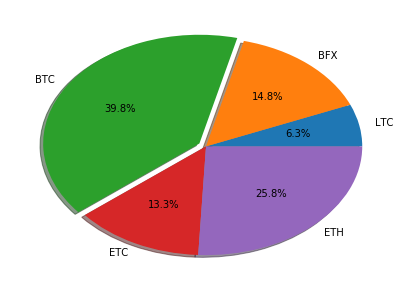
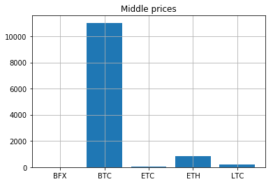
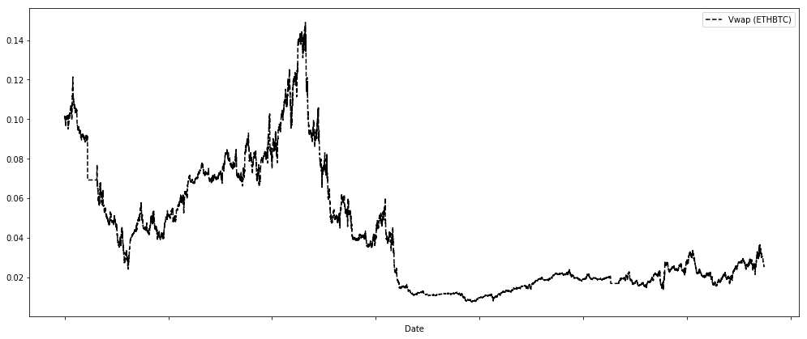
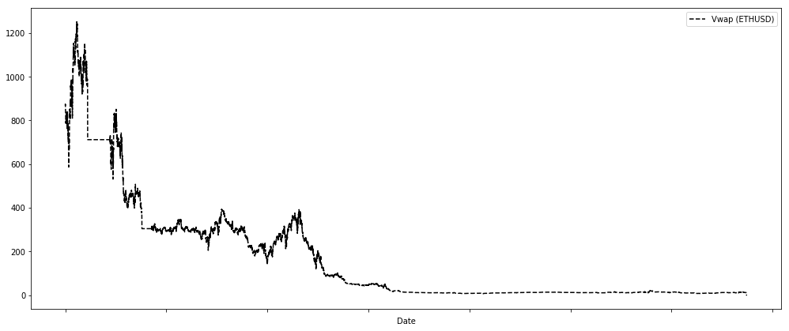

Криптовалюты
в рамках проекта "Журналистика данных и их визуализация"
в рамках проекта "Журналистика данных и их визуализация"
В качестве основного направления работы я выбрал изучение внутреннего
устройства криптовалют, их распространения, причин популярности и прогнозов на
будущее.
Актуальность и важность этой темы не поддается сомнению: в данный момент это одная из
самых показательных областей с экономической точки зрения.
Я считаю, что со временем необходимость криптовалютной граммотности будет сравнима с умением разбираться
в компьютерах, биржах, валютах и, конечно, политике.
Одним из главных генераторов инфоповодов последних пяти лет по праву можно назвать
криптовалюты. Кажется, что сейчас каждый считающий себя образованным человек обязан
иметь хоть малейшее представление об их устройстве, истории и тенденциях. Давайте
вместе разберемся, что же это такое, и с чем его едят.
Криптовалюта — это цифровая валюта, защищённая с помощью криптографических технологий. Физического аналога у этих денежных единиц нет, они существуют только в виртуальном пространстве.
Термин «криптовалюта» вошёл в обиход после публикации статьи, рассказывающей о биткойне — цифровой валюте и платёжной системе. Биткойн — детище Сатоси Накамото, но что за человек или группа людей скрывается за этим псевдонимом, до сих пор доподлинно не известно. Концепцию децентрализованной платёжной системы Накамото представил 31 октября 2008 года. Её основные принципы: анонимность для всех участников, защита от мошенничества и независимость от контролирующих организаций.
Сеть биткойна состоит из связанных между собой блоков транзакций. Каждый последующий блок содержит информацию о предыдущем, так что можно выстроить их в единую цепь и получить сведения о всех совершённых ранее транзакциях (но не о владельцах биткойнов). Процесс создания новых блоков называется майнингом. Чтобы в сети появился очередной блок, необходимо сгенерировать для него криптографическую подпись. В награду вы получаете новые биткойны. Кстати, их эмиссия — процесс вовсе не бесконечный. Заранее известно, что всего может быть создано не более 21 миллиона биткойнов.
Само собой, работа с этим специфическим средством платежей несет в себе довольно значимые риски. Из главных минусов можно отметить:
-- Во-первых, главным аргументом против, является факт, что эта валюта ничем не подтверждена. Однако, золото, послужившее прототипом криптовалют, тоже ничем не подтверждено. Ценность криптовалют определяется спросом и предложением, а также наличием продавцов, готовых обменивать свой товар. Пока что таких продавцов немного, а между спросом и предложением периодически складывается большой дисбаланс. (Однако высокая волатильность превращается в достоинство для тех, кто решил зарабатывать на колебаниях курса криптовалюты).
-- Во-вторых, там, где отправитель и получатель платежа абсолютно анонимны, возникает благоприятная среда для криминальной активности. Сейчас за биткойн в интернете покупают запрещенные вещества и наркотики, а также финансируются преступления посерьезнее. Из-за этого, у биткойна скандальная репутация, что затрудняет его признание на государственном уровне. Его запрещают в одних странах, называют инструментами для спекуляций и суррогатами в других, пытаются поставить под государственный контроль и так далее.
-- В-третьих, если ключ от кошелька забыт или утерян, то все цифровые сбережения пропадут вместе с ним. Восстановить содержимое не представляется возможным. Поэтому нужно быть предельно осторожным и хранить цифровой ключ в надежном и сохранном месте. Точно так же невозможно вернуть перевод, если, например, он был сделан на неправильный адрес. Лучше перепроверить все несколько раз, чем полагаться на честность посторонних.
-- В-четвертых, можно потерять криптовалюту из-за хакерских атак. В виртуальной среде не обходится без виртуальных преступников, чьи действия наносят вполне реальный ущерб. Хакеры взламывают обменники и биржи криптовалют. Интернет – мошенники применяют различные скрипты и схемы для выманивания биткойнов у пользователей. Сами пользователи проявляют недостаточную осторожность в хранении своих цифровых ключей, теряют, забывают, проигрывают в казино.
Из этих минусов вытекают следующие плюсы:
-- У криптовалют нет владельца, а личность его создателя до сих пор под вопросом. Криптовалюта неподвластна правительствам и Центробанкам. Она не привязана ни к одной стране мира и доступна всем пользователям всемирной паутины. Вы – свободный хозяин своего кошелька, который невозможно подвергнуть блокировке. Это, помимо прочего, означает, что в случае дефолта, денежной реформы или еще по какой-либо причине, ваши средства не пострадают. Биткойн не подвержен инфляции. При том, что добыча биткойнов продолжается, в их алгоритме заложен выпуск строго ограниченного количества цифровых денег. Так что никто не может создать их больше, чем было запланировано изначально. Ни одна государственная валюта не может похвастаться подобным преимуществом.
-- Цифровые деньги невозможно подделать, так как они не имеют физического воплощения, а история операций доступна всем пользователям. Хотя сейчас майнинг биткойна сильно затруднен, саму возможность превратить свой компьютер в орудие «валютоискателя» все-таки можно отнести к преимуществам. К тому же, есть другие способы абсолютно бесплатно получить немного криптовалюты – различные биткойн-краны, лотереи, игры.
-- Переводы в биткойнах осуществляются быстрее, чем во многих других платежных системах. Максимум придется подождать подтверждения 10 минут, прежде чем сумма окажется в вашем кошельке.
-- Денежные переводы в криптовалюте обходятся минимальной комиссией, а иногда и вовсе без нее. Совершая транзакцию, вы не раскрываете личных данных. При оплате картой в интернете, нам приходится вводить ее номер и секретный код, уповая на то, что сайт защищен от взлома, и мы не лишимся своих денег. Оплачивая товары и услуги биткойнами, вы обходитесь двумя кодами и не вводите никаких личных данных. Как видите, хватает доводов обратить внимание на цифровые валюты. Но, как все в мире, они не идеальны. Поэтому будет справедливо отметить их недостатки.
Десять пунктов, раскрывающих мнение известных прогнозистов на этот счет: Валюта как минимум одного государства скоро провалится, и стране придется перейти на биткойны. Трейдеры приводит в пример Аргентину и Венесуэлу. Буквально через пару дней после заявления инвестора Венесуэла объявила, что вводит собственную криптовалюту, которую президент Николас Мадуро назвал петрокойном.
Крупные банки начнут принимать биткойн, а также запустят свои сервисы криптокошельков. В конце ноября второй крупнейший банк Южной Кореи — Shinhan Bank — объявил о запуске блокчейн-платформы для хранения биткойн-кошельков. Также многие прогнозирует появление первых биткойн-фьючерсов.
Несмотря на успех биткойна, 95% других криптовалют ожидает такой же крах, какой постиг доткомы в конце 90-х. Однако те валюты, которые выживут, сильно вырастут в цене. Cчитается, что это произойдет в течение 4-6 месяцев.
Власти США втайне начнут приобретать криптовалюту и использовать ее для теневых транзакций с другими странами. Это уже происходит, но настоящий бум начнется в 2018 году.
Китай будет наиболее активно инвестировать в криптовалюту, но, скорее всего, не в биткойн. Вероятно, правительство КНР запустит собственную валюту, которая будет полностью контролироваться властями. Этот ход положительно скажется на легитимности криптовалют в целом.
Волатильность криптовалют по-прежнему останется проблемой. Некоторые компании попытаются изменить ситуацию. Инвестор возлагает надежды на Basecoin — стартап, который обещает выпустить криптовалюту, обеспеченную традиционными деньгами.
Многие компании начнут выплачивать фрилансерам гонорары в криптовалюте. Как следствие, потребуются новые налоговые реформы. В долгосрочной перспективе правительства начнут повышать налоги с продаж.
Когда-то интернет лишил телефонную индустрию монополии. Точно так же криптовалюта лишит государство монополии на выпуск денег.
Будут созданы новые правительственные ведомства, которые будут заниматься регулированием криптовалют и подготовкой новых законопроектов. Как следствие, это приведет к новой волне популярности биткойна и альткойнов с четко заявленной пользой.
Прежде всего это, конечно, криптобиржы. На их долю приходится до 95% всех транзакций. В этой статье я предлагаю рассмотреть основные из них. Кроме того, на одной из них мы проведем перекрестный анализ между криптовалютами.
Крипто-биржа GDAX — довольно молодая платформа, но за это время ее уже успели окрестить площадкой для профессионалов. Также GDAX успела войти в топ-10 лучших криптобирж по объемам торговли и уверенно держит позицию. Но среди российских криптотрейдеров она еще не набрала популярности
Крипто-площадка GDAX (Global Digital Asset Exchange) функционирует всего лишь 2 года. В мировой интернет она вышла в 2016 году и быстро начала набирать обороты, благодаря тому, что создали ее профессионалы.
GDAX — это детище крупного калифорнийского сервиса покупки биткоина Coinbase, который работает с 2012 года. Coinbase Inc. имеет юридическую регуляцию в США, и подпадает полностью под ее законодательство, а также соответствует ряду директив, что еще раз подтверждает ее надежность. Репутация этого сервиса быстро привлекла большое количество инвесторов для создания биржи, в которой будет реализовано больше возможностей для заработка.
Bitfinex – гонконгская криптовалютная биржа (bitfinex.com), основанная в 2012 году и принадлежащая iFinex Inc. Согласно LinkedIn и Crunchbase, ее основателем является Рафаэль Николь (Raphael Nicolle), а сооснователем и IT-специалистом – Патриция Дюранд (Patricia Durand). Тем не менее единственным представителем биржи, лично взаимодействующим с пользователями, остается Зейн Тэккет.
В 2014 биржа Bitfinex стала самой популярной криптобиржей в мире, с более чем 10% от мировых транзакций (если смотреть статистику за последний месяц, то и вовсе 17,10%). Ежедневный объем торгов составляет в среднем $265 млн. Есть мобильные приложения для iOS и Android.
В основе своей Bitfinex является централизованным биржевым стаканом, где пользователи могут обменять биткойн и некоторые другие ведущие криптовалюты на доллары США и биткойны. Также существуют кросс-курсы, когда один альткойн можно обменять на другой.
Основанная компанией HDR Global Trading Limited (которая в свою очередь была основана бывшими банкирами Артуром Хейсом, Сэмюэлем Ридом и Бен Дело) в 2014 году, BitMEX — это торговая платформа, работающая в Гонконге и зарегистрированная на Сейшельских островах.
Bitcoin Mercantile Exchange или BitMEX — одна из крупнейших в настоящее время торговых площадок Bitcoin, с ежедневным объемом торгов более 35 000 BTC в месяц, а также с историей торговли более чем на $ 34 млрд. биткойнов с момента ее создания
В отличие от многих других торговых обменов, BitMEX принимает только депозиты через биткойн, которые затем могут быть использованы для покупки множества других криптовалют. BitMEX специализируется на сложных финансовых операциях, таких как маржинальная торговля, которая торгуется с рычагами. Как и многие биржи, которые работают с использованием криптовалют, BitMEX в настоящее время не регулируется в какой-либо юрисдикции.
Именно по этой бирже я и предлагаю нам понять современные тенденции в криптомире.
Для начала попробуем сравнить статистику по нескольким символам между собой, чтобы определить тенденции в лидерстве среди наиболее популярных криптовалют. Для этого выберем 5 самых популярных торговых единиц на текущий момент: BTC, BFX, ETC, ETH, LTC. В качестве основного иструмента я буду использовать python3 и Jupyther. Тут я опущу аспекты, касающиеся кода, и предоставлю сразу графики.

Здесь я представил проторгованные объемы на круговой диаграмме. На этом графике отчетливо видно, что на данный момент биткоин занимает больше трети всего проторгованного объема. Это объясняет его привлекательность для инвесторов и высокую ликвидность. Второе место стабильно занимает так называемый "Эфир" (ETH). Многие аналитики предсказывают его скорое первенство, что, на самом деле, вполне возможно: его объемы отстают от биткойна всего на 14%. Посмотрим теперь на средние цены валют. По выдвинутому мной предположению о следствии высокой ликвидности от объема, должна прослеживаться корреляция с предыдущей круговой диаграммой.
Посчитаем средние цены на текущий момент:

Ожидаемо, сохранились первые два места. Однако можно увидеть, что дальше не все так однозначно: Litecoin имеет цену бОльшуу, чем ClassicEtherium, хотя на предыдущей диаграмме отношение было обратным. Этот факт легко объясняется небольшим возрастом валюты Litecoin: первая транзацкия по ней была проведена всего полгода назад, зато за это время она быстро приобрела популярность и обогнала ETC. Итак, как мы можем видеть, сравнительная статистика довольно продуктивна: находятся новые закономерности, интересные факты и т. п.
Ну чтож, раз биткоин и эфир занимают первые два места, давайте уделим им больше внимания. Построим гравик изменения цены с течением времени:


Можно заметить, что график валютной пары Биткоин-Доллар имеет несколько странный вид. Я думаю, что это связанно с прекращением на некоторое время торгов по этому инструменту на бирже bitmex.
Мы успешно познакомились с миром криптовалют. Рассмотрели плюсы и минусы неконтролируемого обращения денег, провели детальный разбор основных криптовалютных пар на бирже BITMEX.
Я считаю, что успешно справился с поставленной передо мной задачей. Спасибо за внимание.